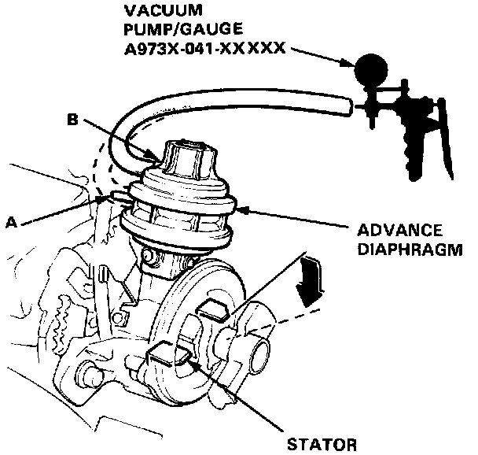

Distributor Advance Unit: Testing and Inspection
SEDAN ONLY
1. Remove the distributor cap and vacuum hoses (#4 and #11) from the advance diaphragm.
2. Connect a vacuum pump/gauge to the advance diaphragm A (inside port).
3. When vacuum (more than 500 mmHg, 20 inHg) is applied to the diaphragm, the stator should turn clockwise and stay. If the stator does not turn or stay, replace the diaphragm.
When vacuum is released, the stator should return. If the stator does not return, repair or replace as necessary.
4. Repeat the steps 1-3 for the advance diaphragm B (outside port).